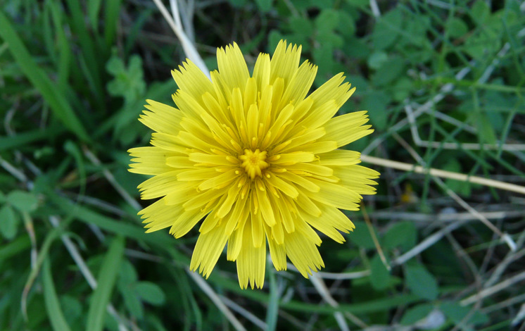
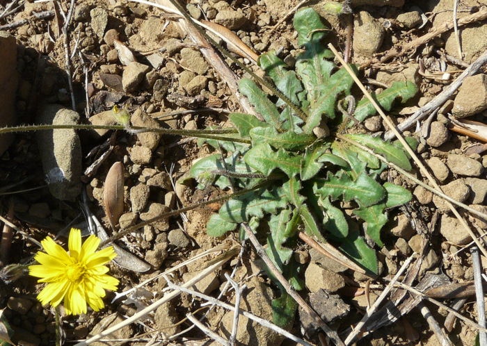
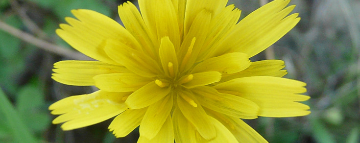
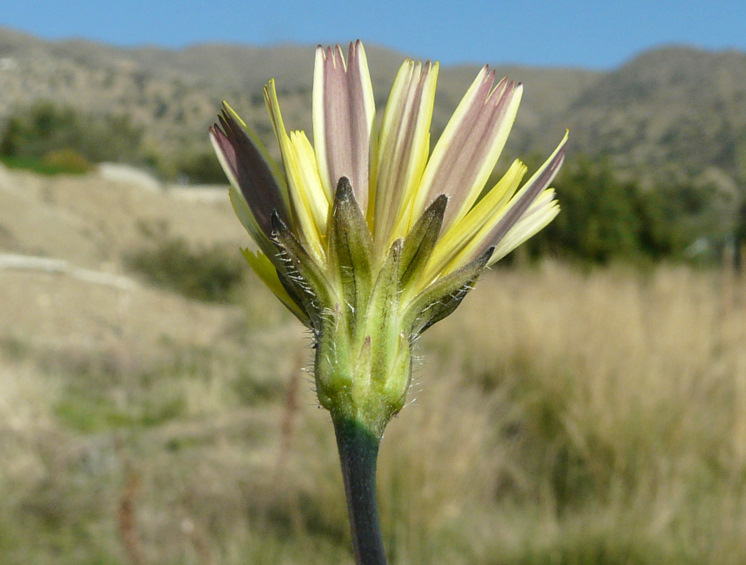
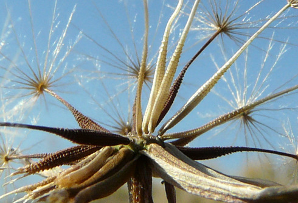
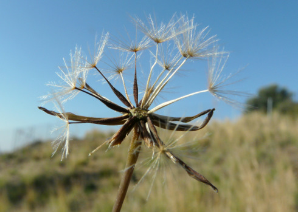
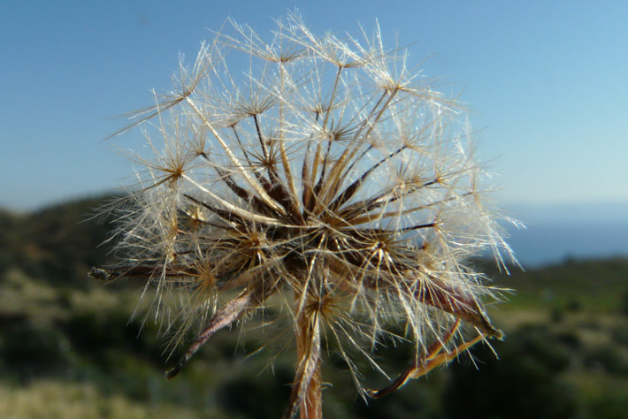
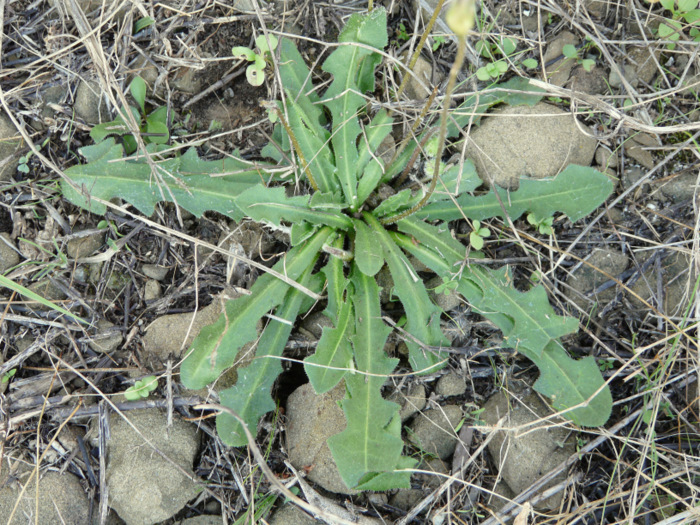
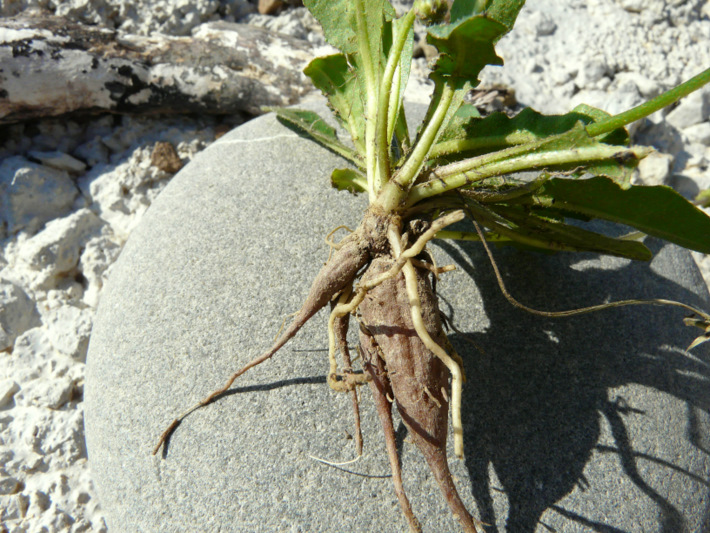

| PHRYGANA | Fauna | Flora |
additions nouveautés |
espèces species |
contact -
info - commentaires phrygana1 (at) gmail.com |
| diversité crétoise -- Cretan diversity | Galles et mines | ||||
| Leontodon tuberosus L. |
| 128 | Flora | ASTERACEAE | Chicorieae CASS. | Leontodon L. |
 Leontodon tuberosus Melambes (Agios Giorgos) 26 novembre 2009 |
| Synonyme: Thrincia tuberosa (L.) DC. | |
|
en:
Tuberous Hawkbit gr:
τα Γλυκοβύζια |
|
|
|
|
| Plante vivace, poilue (poils fourchus). | |
| Feuilles: ovales-oblongues, dentées, lobées (à lobes pointant un peu vers l’arrière), à poils fourchus. | |
| Tige non ramifiée, à poils fourchus peu serrés, ne portant qu’un seul capitule. Racines tubéreuses, en faisceau, de forme fuselée. | |
| Fleurs: ligulées jaunes, les extérieures gris bleu rougeâtre en dessous. Étamines jaunes, à grains de pollen jaunes. Style jaune, bifide. | |
| Fruits: akènes du pourtour du capitule sans bec, munis d’une petite couronne dentée membraneuse (aigrette réduite), les intérieurs droits, munis d’un bec et surmontés d’une aigrette de soies plumeuses de couleur blanc sale. | |
| Hauteur: 05 - 35 cm | Type biologique: hémicryptophyte à rosette |
| Floraison: novembre décembre janvier février mars avril mai (juin) | |
| Altitudes: 1 – 1600 (-1900) m | |
| Statut en Crète: indigène -- native | |
| Biotopes en Crète: phryganas, olivaies, bords des routes, terrains vagues, champs abandonnés. | |
| Distribution: région Méditerranéenne | |
| Note: plante mellifère | |
| Usage : en Crète, les jeunes feuilles sont bouillies et consommées en épinards; les racines tubéreuses sont mangées crues | |
|
 Leontodon tuberosus Melambes (Agios Giorgos) 27 novembre 2009 |
|
 Leontodon tuberosus Melambes (Agios Giorgos) 26 novembre 2009 |
 Leontodon tuberosus Melambes (Agios Giorgos) 26 novembre 2009 |
  Leontodon tuberosus Melambes (Agios Giorgos) 27 novembre 2009 |
 Leontodon tuberosus Melambes (Agios Giorgos) 27 novembre 2009 |
|
 Leontodon tuberosus Melambes (Agios Giorgos) 27 novembre 2009 |
|
 Leontodon tuberosus Melambes (Agios Giorgos) 27 novembre 2009 |
| 31 octobre 2011 |
| © paul fontaine -- © Phrygana.eu 2007 -- 2013 |